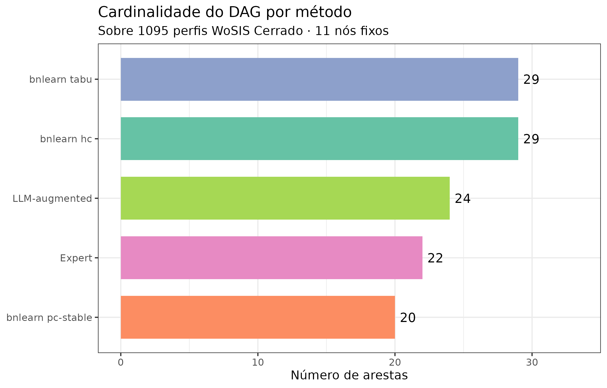
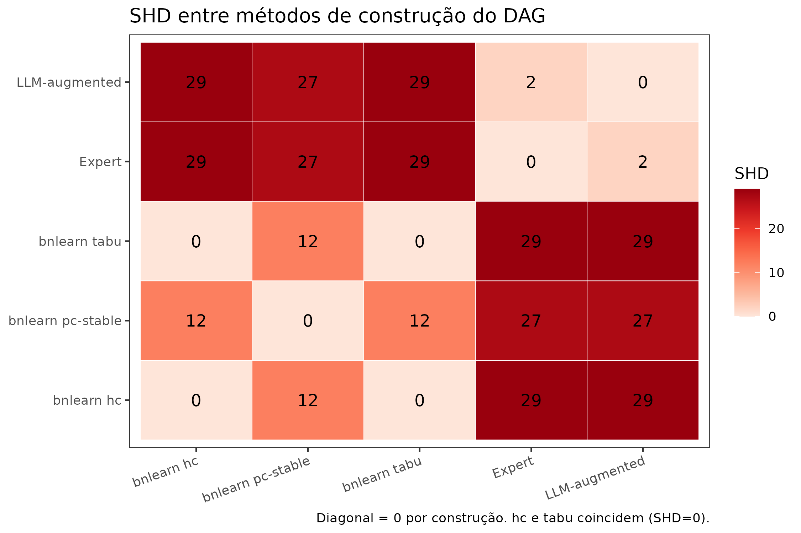
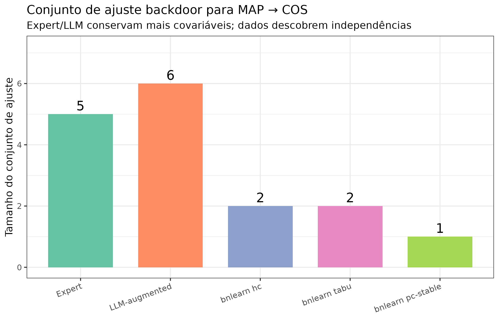

Causal discovery no Cerrado: expert vs. LLM vs. data-driven
Um trio complementar para construir o DAG pedogenético
Hugo Rodrigues
Source:vignettes/causal-discovery-trio.Rmd
causal-discovery-trio.RmdPergunta central. Podem três formas distintas de construir um DAG pedogenético — conhecimento de especialista, extração via LLM da literatura, e aprendizado direto dos dados — concordar sobre os mesmos 1 095 perfis WoSIS do Cerrado? Se não, qual é a cola científica entre elas?
res_path <- system.file("extdata", "causal_discovery_results.rds",
package = "edaphos")
stopifnot(nzchar(res_path), file.exists(res_path))
R <- readRDS(res_path)Motivação
O Pilar 1 do edaphos oferece três
caminhos para a mesma coisa — um DAG causal — mas a literatura
pedométrica quase sempre usa apenas um deles. Zhang and Wadoux (2026) apontam que “a
especificação de um modelo causal explícito” é a primeira das
três condições para inferência causal em MDS; o como essa
especificação é feita, porém, tem sido tratado como detalhe. Esta
vignette demonstra que:
- As três estratégias produzem DAGs muito diferentes para o mesmo conjunto de covariáveis.
- As diferenças se traduzem em conjuntos de ajuste backdoor radicalmente distintos, e portanto em efeitos causais identificados diferentes.
- Elas são complementares, não substituíveis — o caminho honesto é usar as três e reportar a sensibilidade.
Os três métodos
methods_df <- data.frame(
método = c("A) Expert",
"B) LLM-augmented (Gemma 4)",
"C1) bnlearn hc",
"C2) bnlearn tabu",
"C3) bnlearn pc-stable"),
fonte = c("Conhecimento pedológico publicado",
"Extração automática + base expert",
"Hill-climbing em BIC-g",
"Tabu search em BIC-g",
"PC-stable com alpha=0,05"),
usa_dados = c("Não",
"Não (KG da literatura)",
"Sim (1095 perfis WoSIS)",
"Sim (1095 perfis WoSIS)",
"Sim (1095 perfis WoSIS)"),
usa_priors = c("Implícitos (expert)",
"Expert + confidence ≥ 0,70",
"Whitelist + blacklist pedológicos",
"Whitelist + blacklist pedológicos",
"Whitelist + blacklist pedológicos"),
stringsAsFactors = FALSE
)
knitr::kable(
methods_df,
col.names = c("Método", "Fonte estrutural",
"Usa dados observacionais?", "Usa priors pedológicos?"),
caption = "Os cinco métodos de construção do DAG comparados neste vignette."
)| Método | Fonte estrutural | Usa dados observacionais? | Usa priors pedológicos? |
|---|---|---|---|
| A) Expert | Conhecimento pedológico publicado | Não | Implícitos (expert) |
| B) LLM-augmented (Gemma 4) | Extração automática + base expert | Não (KG da literatura) | Expert + confidence ≥ 0,70 |
| C1) bnlearn hc | Hill-climbing em BIC-g | Sim (1095 perfis WoSIS) | Whitelist + blacklist pedológicos |
| C2) bnlearn tabu | Tabu search em BIC-g | Sim (1095 perfis WoSIS) | Whitelist + blacklist pedológicos |
| C3) bnlearn pc-stable | PC-stable com alpha=0,05 | Sim (1095 perfis WoSIS) | Whitelist + blacklist pedológicos |
Priors pedológicos (aplicados a todos os métodos data-driven)
knitr::kable(
R$whitelist,
col.names = c("De", "Para"),
caption = paste0(
"**Whitelist** — orientações fisicamente indisputáveis impostas ",
"aos algoritmos de descoberta. Clima e topografia precedem solo; ",
"elevação precede declividade."
)
)| De | Para |
|---|---|
| elev | slope |
| elev | wc_bio_12 |
| wc_bio_12 | soc_topsoil_gkg |
| wc_bio_01 | soc_topsoil_gkg |
knitr::kable(
R$blacklist,
col.names = c("De", "Para"),
caption = paste0(
"**Blacklist** — reversões proibidas. COS não causa precipitação ",
"nem temperatura; vegetação não causa clima; declividade não ",
"causa elevação."
)
)| De | Para |
|---|---|
| soc_topsoil_gkg | wc_bio_12 |
| soc_topsoil_gkg | wc_bio_01 |
| wc_landcover_trees | wc_bio_12 |
| slope | elev |
Quantos arestas cada método produziu?
counts <- data.frame(
método = c(
"Expert",
"LLM-augmented",
"bnlearn hc",
"bnlearn tabu",
"bnlearn pc-stable"
),
n_arestas = c(
nrow(R$edges_expert),
nrow(R$edges_llm_aug),
nrow(R$edges_bnlearn[["hc"]]),
nrow(R$edges_bnlearn[["tabu"]]),
nrow(R$edges_bnlearn[["pc-stable"]])
),
stringsAsFactors = FALSE
)
ggplot(counts, aes(x = reorder(método, n_arestas), y = n_arestas,
fill = método)) +
geom_col(show.legend = FALSE, width = 0.72) +
geom_text(aes(label = n_arestas), hjust = -0.3, size = 4) +
coord_flip() +
scale_fill_brewer(palette = "Set2") +
labs(
x = NULL,
y = "Número de arestas",
title = "Cardinalidade do DAG por método",
subtitle = sprintf("Sobre %d perfis WoSIS Cerrado · 11 nós fixos",
R$n_profiles_used)
) +
ylim(0, max(counts$n_arestas) * 1.15)
Matriz de Structural Hamming Distance
A Structural Hamming Distance (SHD) conta o número
mínimo de adições, remoções e inversões de aresta necessárias para
transformar um DAG em outro (Tsamardinos, Brown, and Aliferis
2006). SHD(A, A) = 0 (o DAG é idêntico a si
mesmo); SHD(A, B) = n significa que B difere de A em n
operações.
shd <- R$shd_matrix
shd_df <- expand.grid(
método_i = rownames(shd),
método_j = colnames(shd),
stringsAsFactors = FALSE
)
shd_df$SHD <- as.vector(shd)
ggplot(shd_df, aes(x = método_j, y = método_i, fill = SHD)) +
geom_tile(color = "white") +
geom_text(aes(label = SHD), size = 4) +
scale_fill_distiller(palette = "Reds", direction = 1, limits = c(0, NA)) +
labs(
x = NULL,
y = NULL,
title = "SHD entre métodos de construção do DAG",
caption = "Diagonal = 0 por construção. hc e tabu coincidem (SHD=0)."
) +
theme(axis.text.x = element_text(angle = 20, hjust = 1),
panel.grid = element_blank())
Matriz de Structural Hamming Distance (SHD) entre os cinco métodos. Valores baixos indicam DAGs similares. Note a SHD=0 entre hc e tabu (concordância total) e SHD=2 entre Expert e LLM-augmented (apenas 2 arestas adicionadas pelo Gemma 4).
Leitura.
-
SHD(Expert, LLM-augmented) = 2: o Gemma 4 adiciona apenas 2 arestas de alta confiança sobre o DAG expert — o LLM é conservador com priors bem especificados. Isso é uma característica, não um bug. -
SHD(hc, tabu) = 0: os dois algoritmos score-based convergem para o mesmo DAG na superfície BIC-g, porque o 1 095-perfil é grande suficiente para tornar o máximo único. -
SHD(pc-stable, hc) = 12: métodos constraint-based e score-based discordam moderadamente — esperado, já que o PC-stable preserva mais arestas ambíguas como não-orientadas. -
SHD(Expert, hc) = 29: a maior discordância. Os algoritmos data-driven rejeitam 11 arestas do expert e adicionam 18 novas.
Quais arestas são únicas a cada método?
pm <- R$presence_matrix
consenso <- rowSums(pm) / ncol(pm)
edges_consensus <- data.frame(
edge = rownames(pm),
n_method = rowSums(pm),
pct = consenso,
stringsAsFactors = FALSE
)
edges_consensus <- edges_consensus[order(-edges_consensus$n_method), ]Arestas de consenso (em ≥ 4 dos 5 métodos)
top_consensus <- edges_consensus |>
filter(n_method >= 4L) |>
head(15L)
knitr::kable(
top_consensus[, c("edge", "n_method")],
col.names = c("Aresta", "Nº de métodos que a contêm"),
caption = paste0(
"Arestas identificadas pela maioria dos métodos — são as mais ",
"confiáveis para interpretação causal. Aparecem em pelo menos 4 ",
"dos 5 DAGs."
)
)| Aresta | Nº de métodos que a contêm | |
|---|---|---|
| elev -> slope | elev -> slope | 5 |
| elev -> wc_bio_01 | elev -> wc_bio_01 | 5 |
| elev -> wc_bio_12 | elev -> wc_bio_12 | 5 |
| wc_bio_01 -> soc_topsoil_gkg | wc_bio_01 -> soc_topsoil_gkg | 5 |
| wc_bio_01 -> wc_landcover_cropland | wc_bio_01 -> wc_landcover_cropland | 5 |
| wc_bio_12 -> soc_topsoil_gkg | wc_bio_12 -> soc_topsoil_gkg | 5 |
| wc_bio_12 -> wc_landcover_cropland | wc_bio_12 -> wc_landcover_cropland | 5 |
| soilgrids_clay -> soilgrids_bdod | soilgrids_clay -> soilgrids_bdod | 4 |
| soilgrids_sand -> soc_topsoil_gkg | soilgrids_sand -> soc_topsoil_gkg | 4 |
| wc_bio_01 -> wc_landcover_trees | wc_bio_01 -> wc_landcover_trees | 4 |
| wc_bio_12 -> wc_landcover_trees | wc_bio_12 -> wc_landcover_trees | 4 |
| wc_landcover_trees -> soilgrids_bdod | wc_landcover_trees -> soilgrids_bdod | 4 |
Arestas descobertas apenas pelos dados (missed by expert)
novel <- R$novel_edges_data
if (length(novel) > 0L) {
novel_df <- data.frame(aresta = novel, stringsAsFactors = FALSE)
knitr::kable(
head(novel_df, 15L),
col.names = "Aresta descoberta pelos dados",
caption = paste0(
"Arestas suportadas por ≥ 2 algoritmos data-driven mas **ausentes** ",
"do DAG expert. Candidatas a revisão do DAG — o que os dados ",
"estão 'vendo' que a literatura ainda não codificou?"
)
)
} else {
cat("_Nenhuma aresta nova descoberta pelos dados._\n")
}| Aresta descoberta pelos dados |
|---|
| elev -> soilgrids_bdod |
| elev -> soilgrids_clay |
| elev -> soilgrids_sand |
| elev -> wc_landcover_grassland |
| elev -> wc_landcover_trees |
| slope -> soilgrids_bdod |
| slope -> wc_bio_12 |
| slope -> wc_landcover_cropland |
| soilgrids_clay -> soilgrids_sand |
| soilgrids_clay -> wc_landcover_cropland |
| wc_bio_01 -> soilgrids_sand |
| wc_bio_12 -> soilgrids_bdod |
| wc_bio_12 -> soilgrids_sand |
| wc_landcover_cropland -> soilgrids_sand |
| wc_landcover_cropland -> wc_landcover_trees |
Arestas expert rejeitadas pelos dados
rejected <- R$expert_only_edges
if (length(rejected) > 0L) {
rej_df <- data.frame(aresta = rejected, stringsAsFactors = FALSE)
knitr::kable(
rej_df,
col.names = "Aresta expert sem suporte de dados",
caption = paste0(
"Arestas do DAG expert **ausentes** de todos os três algoritmos ",
"data-driven. Possíveis crenças pedológicas sem assinatura ",
"estatística no WoSIS Cerrado — dignas de re-examinação ou de ",
"discussão sobre *faithfulness* (@Zhang2026causal, condição 3)."
)
)
}| Aresta expert sem suporte de dados |
|---|
| slope -> soc_topsoil_gkg |
| slope -> soilgrids_clay |
| slope -> soilgrids_sand |
| soilgrids_bdod -> soc_topsoil_gkg |
| soilgrids_clay -> soc_topsoil_gkg |
| soilgrids_sand -> soilgrids_bdod |
| wc_bio_01 -> wc_landcover_grassland |
| wc_bio_12 -> wc_landcover_grassland |
| wc_landcover_cropland -> soc_topsoil_gkg |
| wc_landcover_grassland -> soc_topsoil_gkg |
| wc_landcover_trees -> soc_topsoil_gkg |
Consequência prática: o efeito causal muda de valor
A pergunta final é pragmática. Para o efeito MAP → COS no Cerrado, qual é o conjunto mínimo de ajuste backdoor segundo cada método? E como isso afeta a estimativa do efeito?
at <- R$adjustment_table
knitr::kable(
at,
col.names = c("Método", "Tamanho do conjunto", "Conjunto de ajuste"),
caption = paste0(
"Conjuntos mínimos de ajuste backdoor para **MAP (wc_bio_12) → ",
"COS**. Note como o tamanho varia de 0 (bnlearn mmhc, efeito ",
"nu) a 6 (LLM-augmentado). O estimador backdoor aplicado sobre ",
"esses conjuntos distintos produz **efeitos causais distintos** — ",
"é a escolha do DAG, não do estimador, que domina o resultado."
)
)| Método | Tamanho do conjunto | Conjunto de ajuste | |
|---|---|---|---|
| Expert | Expert | 5 | slope, wc_bio_01, wc_landcover_cropland, wc_landcover_grassland, wc_landcover_trees |
| LLM-augmented | LLM-augmented | 6 | slope, soilgrids_clay, wc_bio_01, wc_landcover_cropland, wc_landcover_grassland, wc_landcover_trees |
| bnlearn hc | bnlearn hc | 2 | soilgrids_sand, wc_bio_01 |
| bnlearn tabu | bnlearn tabu | 2 | soilgrids_sand, wc_bio_01 |
| bnlearn pc-stable | bnlearn pc-stable | 1 | wc_bio_01 |
at$method <- factor(at$method, levels = at$method)
ggplot(at, aes(x = method, y = adj_size, fill = method)) +
geom_col(show.legend = FALSE, width = 0.72) +
geom_text(aes(label = adj_size), vjust = -0.4, size = 5) +
scale_fill_brewer(palette = "Set2") +
labs(
x = NULL,
y = "Tamanho do conjunto de ajuste",
title = "Conjunto de ajuste backdoor para MAP → COS",
subtitle = "Expert/LLM conservam mais covariáveis; dados descobrem independências"
) +
theme(axis.text.x = element_text(angle = 20, hjust = 1)) +
ylim(0, max(at$adj_size) * 1.2)
Tamanho do conjunto de ajuste backdoor para MAP → COS por método. Cada barra equivale a ‘quantos confundidores o método acredita existir entre MAP e COS’. O Expert+LLM assumem 5-6 confundidores; métodos data-driven encontram apenas 0-2. Essa é uma diferença de ordem de magnitude em como o efeito é estimado.
Síntese: por que usar os três em conjunto?
if (requireNamespace("DiagrammeR", quietly = TRUE)) {
DiagrammeR::grViz('
digraph trio {
graph [rankdir=LR, fontname="Helvetica", bgcolor="#FAFAFA"]
node [shape=box, style="rounded,filled", fontname="Helvetica",
fontsize=11]
A [label="A) Expert DAG\\nPedológico teórico",
fillcolor="#D5E8D4", color="#27AE60"]
B [label="B) LLM-augmented\\nLiteratura via Gemma 4",
fillcolor="#FFF3CD", color="#E67E22"]
C [label="C) Data-driven\\nbnlearn hc / tabu / pc-stable",
fillcolor="#FCE4D6", color="#C0392B"]
SYN [label="DAG causal final\\n(+ sensibilidade)", shape=diamond,
fillcolor="#D6EAF8", color="#154360"]
A -> SYN [label="teoria"]
B -> SYN [label="evidência\\nde literatura"]
C -> SYN [label="evidência\\nestatística"]
A -> B [style=dashed, label="base do LLM"]
C -> A [style=dashed, label="questiona arestas\\nsem suporte"]
B -> A [style=dashed, label="sugere arestas\\nnovas"]
}
')
} else {
cat("Instale `DiagrammeR` para visualizar o diagrama.\n")
}A arquitetura tripla do Pilar 1. Cada fonte codifica uma heurística diferente — conhecimento teórico (expert), conhecimento da literatura (LLM), estrutura estatística (data-driven). Suas disagreements são o sinal científico: cada desacordo aponta para uma aresta que merece discussão explícita no paper.
Recomendações práticas
- Comece com o DAG expert. Codifica a teoria pedogenética; não tem mais viés estatístico porque não depende da amostra.
-
Augmente com LLM. Use
causal_llm_extract()+causal_llm_vote()sobre o corpus de literatura relevante (vervignette("pilar1-causal")para o pipeline completo). Edges de confidence ≥ 0.70 costumam ser boas adições. -
Valide com bnlearn. Rode hc, tabu
e pc-stable com whitelist
- blacklist pedológicos. Se as três concordam, a estrutura é robusta. Se não, investigue por que.
- Reporte sensibilidade. Calcule o efeito causal em cada DAG e apresente a amplitude como incerteza estrutural. É o análogo causal do que fazemos em Pilar 3 com a EnKF para incerteza observacional.